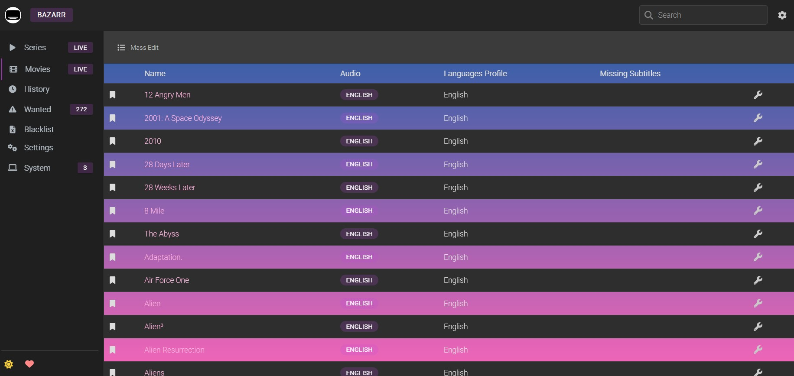
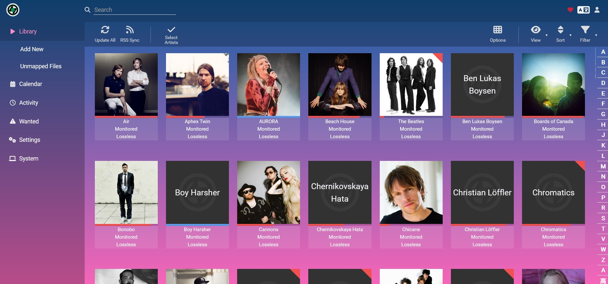
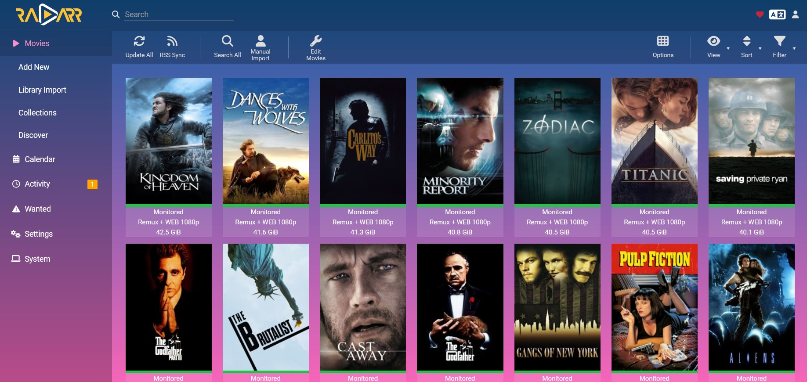
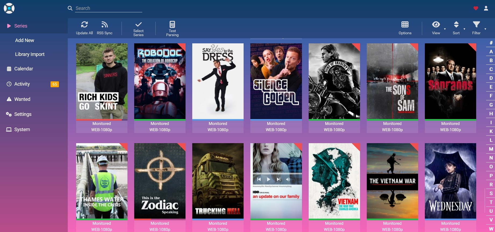
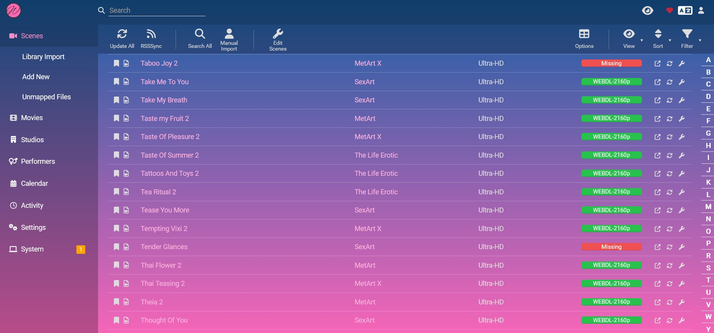
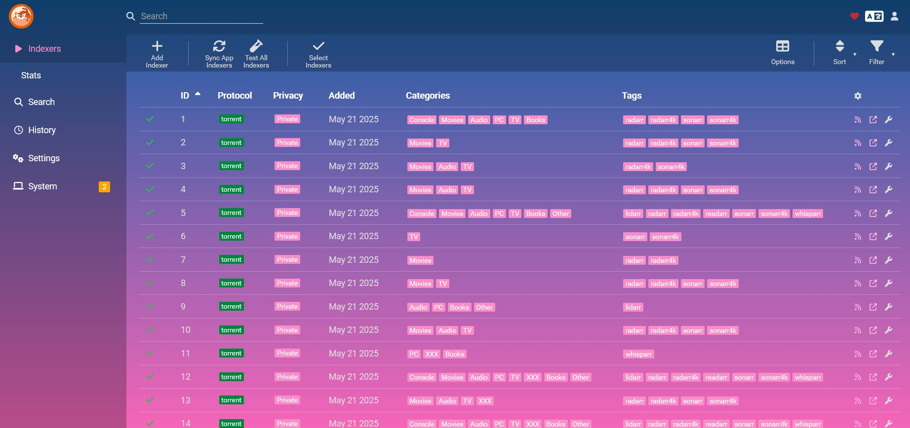

Deploying an arrs stack using Ansible
Contents
Introduction#
Some of my favourite services to deploy are the servarr / arrs PVR apps:
- Bazarr (Subtitles) 
- Lidarr (Music) 
- Radarr (Movies) / Radarr-4K (4K Movies) 
- Sonarr (TV) / Sonarr-4K (4K TV) 
- Whisparr (Adult) 
- Prowlarr (Indexers) 
Using Ansible, I do everything required to deploy these services for my needs.
This guide will:
- Go through my arrs role step-by-step, from clean-up to deployment.
- Aim to guide those looking to make their own role for their own needs.
Playbook#
I include my arrs services in a role that gets included during the play:
## /ansible/playbook.yml
################################
# ARRS
################################
- name: Deploy arrs stack
when: inventory_hostname == 'localhost'
ansible.builtin.include_role:
name: arrs
apply:
tags: arrs
tags: arrs
Note: I make use of the pre-tasks listed here. You may use these, or you can always define things, such as timezones, manually if you’d prefer.
Group_Vars#
Here I define variables for service name, image repo/tag, ports and location.
## /ansible/group_vars/all/roles/arrs.yml
################################
# BAZARR
################################
bazarr_name: 'bazarr'
bazarr_image_repo: 'ghcr.io/hotio/bazarr'
bazarr_image_tag: 'latest'
bazarr_ports_host: '6767'
bazarr_ports_cont: '6767'
bazarr_location: '/opt/{{ bazarr_name }}'
################################
# LIDARR
################################
lidarr_name: 'lidarr'
lidarr_image_repo: 'ghcr.io/hotio/lidarr'
lidarr_image_tag: 'latest'
lidarr_ports_host: '8686'
lidarr_ports_cont: '8686'
lidarr_location: '/opt/{{ lidarr_name }}'
################################
# PROWLARR
################################
prowlarr_name: 'prowlarr'
prowlarr_image_repo: 'ghcr.io/hotio/prowlarr'
prowlarr_image_tag: 'latest'
prowlarr_ports_host: '9696'
prowlarr_ports_cont: '9696'
prowlarr_location: '/opt/{{ prowlarr_name }}'
################################
# RADARR
################################
radarr_name: 'radarr'
radarr_image_repo: 'ghcr.io/hotio/radarr'
radarr_image_tag: 'latest'
radarr_ports_host: '7878'
radarr_ports_cont: '7878'
radarr_location: '/opt/{{ radarr_name }}'
################################
# RADARR-4K
################################
radarr_4k_name: 'radarr4k'
radarr_4k_image_repo: 'ghcr.io/hotio/radarr'
radarr_4k_image_tag: 'latest'
radarr_4k_ports_host: '7879'
radarr_4k_ports_cont: '7878'
radarr_4k_location: '/opt/{{ radarr_4k_name }}'
################################
# SONARR
################################
sonarr_name: 'sonarr'
sonarr_image_repo: 'ghcr.io/hotio/sonarr'
sonarr_image_tag: 'latest'
sonarr_ports_host: '8989'
sonarr_ports_cont: '8989'
sonarr_location: '/opt/{{ sonarr_name }}'
################################
# SONARR-4K
################################
sonarr_4k_name: 'sonarr4k'
sonarr_4k_image_repo: 'ghcr.io/hotio/sonarr'
sonarr_4k_image_tag: 'latest'
sonarr_4k_ports_host: '8990'
sonarr_4k_ports_cont: '8989'
sonarr_4k_location: '/opt/{{ sonarr_4k_name }}'
################################
# WHISPARR
################################
whisparr_name: 'whisparr'
whisparr_image_repo: 'ghcr.io/hotio/whisparr'
whisparr_image_tag: 'v3'
whisparr_ports_host: '6969'
whisparr_ports_cont: '6969'
whisparr_location: '/opt/{{ whisparr_name }}'
Vault#
## /ansible/group_vars/all/vault.yml
################################
# ARRS VAULT
################################
bazarr_api: 'SomeAPIKey'
bazarr_flask_key: 'SomeAPIKey'
bazarr_opensub_user: 'SomeUsername'
bazarr_opensub_pass: 'SomePassword'
lidarr_api: 'SomeAPIKey'
prowlarr_api: 'SomeAPIKey'
radarr_api: 'SomeAPIKey'
radarr_4k_api: 'SomeAPIKey'
sonarr_api: 'SomeAPIKey'
sonarr_4k_api: 'SomeAPIKey'
whisparr_api: 'SomeAPIKey'
Role/Tasks#
The majority of tasks occur here.
Cleanup#
To be safe, and to make sure changes apply, I first down existing running arrs services:
################################
# CLEAN UP
################################
- name: Remove arrs stack
community.docker.docker_stack:
name: arrs
state: absent
- name: Remove arrs-stack file
ansible.builtin.file:
path: /opt/arrs-stack.yml
state: absent
Directories#
Next is to create appdata folders for each arrs service.
Bazarr differs with the config located in a config sub-directory.
For those wishing to use Postgres, these folders are simply used to hold configs.
################################
# DIRECTORIES
################################
- name: Create directories
ansible.builtin.file:
path: '{{ item }}'
state: 'directory'
force: 'false'
owner: '{{ puid }}'
group: '{{ pgid }}'
mode: '0755'
loop:
- '{{ bazarr_location }}'
- '{{ bazarr_location }}/config'
- '{{ lidarr_location }}'
- '{{ prowlarr_location }}'
- '{{ radarr_location }}'
- '{{ radarr_4k_location }}'
- '{{ sonarr_location }}'
- '{{ sonarr_4k_location }}'
- '{{ whisparr_location }}'
Templates#
After the directories are created, I then template configs for each arrs service.
################################
# TEMPLATES
################################
- name: Conduct template tasks
ansible.builtin.template:
src: '{{ item.template }}'
dest: '{{ item.file }}'
force: false
owner: '{{ puid }}'
group: '{{ pgid }}'
mode: '0664'
loop:
- { template: '{{ role_path }}/templates/configs/bazarr_config.yaml.j2', file: '{{ bazarr_location }}/config/config.yaml' }
- { template: '{{ role_path }}/templates/configs/arrs_config.xml.j2', file: '{{ lidarr_location }}/config.xml' }
- { template: '{{ role_path }}/templates/configs/arrs_config.xml.j2', file: '{{ prowlarr_location }}/config.xml' }
- { template: '{{ role_path }}/templates/configs/arrs_config.xml.j2', file: '{{ radarr_location }}/config.xml' }
- { template: '{{ role_path }}/templates/configs/arrs_config.xml.j2', file: '{{ radarr_4k_location }}/config.xml' }
- { template: '{{ role_path }}/templates/configs/arrs_config.xml.j2', file: '{{ sonarr_location }}/config.xml' }
- { template: '{{ role_path }}/templates/configs/arrs_config.xml.j2', file: '{{ sonarr_4k_location }}/config.xml' }
- { template: '{{ role_path }}/templates/configs/arrs_config.xml.j2', file: '{{ whisparr_location }}/config.xml' }
- name: Wait for files to be created
ansible.builtin.wait_for:
path: '{{ item }}'
state: present
loop:
- '{{ bazarr_location }}/config/config.yaml'
- '{{ lidarr_location }}/config.xml'
- '{{ prowlarr_location }}/config.xml'
- '{{ radarr_location }}/config.xml'
- '{{ radarr_4k_location }}/config.xml'
- '{{ sonarr_location }}/config.xml'
- '{{ sonarr_4k_location }}/config.xml'
- '{{ whisparr_location }}/config.xml'
All arrs, except Bazarr, use the same config template:
## /ansible/roles/arrs/templates/configs/arrs_config.xml.j2
<Config>
<BindAddress>*</BindAddress>
<Port></Port>
<SslPort>9898</SslPort>
<EnableSsl>False</EnableSsl>
<LaunchBrowser>True</LaunchBrowser>
<ApiKey></ApiKey>
<AuthenticationMethod>Forms</AuthenticationMethod>
<AuthenticationRequired>Enabled</AuthenticationRequired>
<Branch>nightly</Branch>
<LogLevel>info</LogLevel>
<SslCertPath></SslCertPath>
<SslCertPassword></SslCertPassword>
<UrlBase></UrlBase>
<InstanceName></InstanceName>
<UpdateMechanism>Docker</UpdateMechanism>
</Config>
The config is edited in subsequent tasks to adapt to the respective service using it.
Bazarr has its own config and is templated with desired variables here:
## /ansible/roles/arrs/templates/configs/bazarr_config.yaml.j2
---
addic7ed:
cookies: ''
password: ''
user_agent: ''
username: ''
vip: false
analytics:
enabled: true
anidb:
api_client: ''
api_client_ver: 1
animetosho:
anidb_api_client: ''
anidb_api_client_ver: 1
search_threshold: 6
anticaptcha:
anti_captcha_key: ''
assrt:
token: ''
auth:
apikey: {{ bazarr_api }}
password: ''
type: null
username: ''
avistaz:
cookies: ''
user_agent: ''
backup:
day: 6
folder: /config/backup
frequency: Weekly
hour: 3
retention: 31
betaseries:
token: ''
cinemaz:
cookies: ''
user_agent: ''
cors:
enabled: false
deathbycaptcha:
password: ''
username: ''
embeddedsubtitles:
fallback_lang: en
hi_fallback: false
included_codecs: []
timeout: 600
unknown_as_fallback: false
general:
adaptive_searching: true
adaptive_searching_delay: 3w
adaptive_searching_delta: 1w
anti_captcha_provider: null
auto_update: true
base_url: ''
branch: development
chmod: '0640'
chmod_enabled: false
days_to_upgrade_subs: 30
debug: false
default_und_audio_lang: ''
default_und_embedded_subtitles_lang: ''
dont_notify_manual_actions: false
embedded_subs_show_desired: true
embedded_subtitles_parser: ffprobe
enabled_integrations: []
enabled_providers:
- opensubtitlescom
- embeddedsubtitles
flask_secret_key: {{ bazarr_flask_key }}
hi_extension: hi
ignore_ass_subs: false
ignore_pgs_subs: false
ignore_vobsub_subs: false
ip: 0.0.0.0
language_equals: []
minimum_score: 90
minimum_score_movie: 70
movie_default_enabled: true
movie_default_profile: 1
multithreading: true
page_size: 25
parse_embedded_audio_track: false
path_mappings: []
path_mappings_movie: []
port: {{ bazarr_ports_cont }}
postprocessing_cmd: ''
postprocessing_threshold: 90
postprocessing_threshold_movie: 70
serie_default_enabled: true
serie_default_profile: 1
single_language: false
skip_hashing: false
subfolder: current
subfolder_custom: ''
subzero_mods: OCR_fixes,remove_tags,remove_HI,common,fix_uppercase
theme: auto
upgrade_frequency: 12
upgrade_manual: true
upgrade_subs: true
use_embedded_subs: true
use_postprocessing: false
use_postprocessing_threshold: false
use_postprocessing_threshold_movie: false
use_radarr: true
use_scenename: true
use_sonarr: true
utf8_encode: true
wanted_search_frequency: 6
wanted_search_frequency_movie: 6
hdbits:
passkey: ''
username: ''
karagarga:
f_password: ''
f_username: ''
password: ''
username: ''
ktuvit:
email: ''
hashed_password: ''
legendasdivx:
password: ''
skip_wrong_fps: false
username: ''
log:
exclude_filter: ''
ignore_case: false
include_filter: ''
use_regex: false
movie_scores:
audio_codec: 3
edition: 1
hash: 119
hearing_impaired: 1
release_group: 13
resolution: 2
source: 7
streaming_service: 1
title: 60
video_codec: 2
year: 30
napisy24:
password: ''
username: ''
opensubtitles:
password: ''
skip_wrong_fps: false
ssl: false
timeout: 15
use_tag_search: false
username: ''
vip: false
opensubtitlescom:
include_ai_translated: false
password: {{ bazarr_opensub_pass }}
use_hash: true
username: {{ bazarr_opensub_user }}
podnapisi:
verify_ssl: true
postgresql:
database: bazarr
enabled: true
host: {{ postgres_name }}
password: {{ postgres_password }}
port: {{ postgres_ports_cont }}
username: {{ postgres_username }}
proxy:
exclude:
- localhost
- 127.0.0.1
password: ''
port: ''
type: null
url: ''
username: ''
radarr:
apikey: {{ radarr_api }}
base_url: ''
defer_search_signalr: false
excluded_tags: []
full_update: Daily
full_update_day: 6
full_update_hour: 4
http_timeout: 60
ip: {{ radarr_name }}
movies_sync: 60
only_monitored: false
port: {{ radarr_ports_cont }}
ssl: false
sync_only_monitored_movies: false
use_ffprobe_cache: true
series_scores:
audio_codec: 3
episode: 30
hash: 359
hearing_impaired: 1
release_group: 14
resolution: 2
season: 30
series: 180
source: 7
streaming_service: 1
video_codec: 2
year: 90
sonarr:
apikey: {{ sonarr_api }}
base_url: ''
defer_search_signalr: false
exclude_season_zero: false
excluded_series_types: []
excluded_tags: []
full_update: Daily
full_update_day: 6
full_update_hour: 4
http_timeout: 60
ip: {{ sonarr_name }}
only_monitored: false
port: {{ sonarr_ports_cont }}
series_sync: 60
ssl: false
sync_only_monitored_episodes: false
sync_only_monitored_series: false
use_ffprobe_cache: true
subf2m:
user_agent: ''
verify_ssl: true
subsync:
checker:
blacklisted_languages: []
blacklisted_providers: []
debug: false
force_audio: false
gss: true
max_offset_seconds: 60
no_fix_framerate: true
subsync_movie_threshold: 70
subsync_threshold: 90
use_subsync: false
use_subsync_movie_threshold: false
use_subsync_threshold: false
titlovi:
password: ''
username: ''
titulky:
approved_only: false
password: ''
username: ''
whisperai:
endpoint: http://127.0.0.1:9000
loglevel: INFO
response: 5
timeout: 3600
xsubs:
password: ''
username: ''